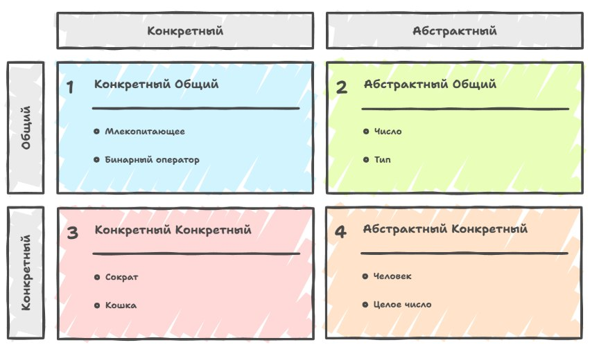
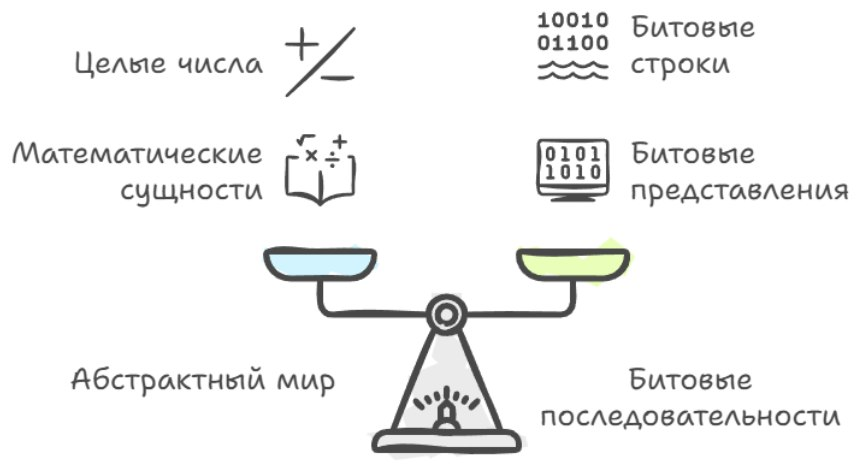
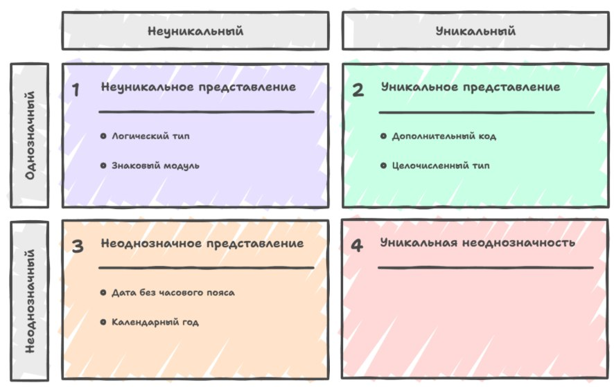
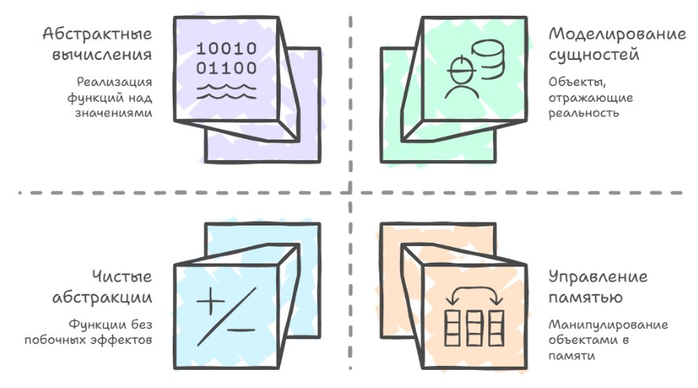

Это опубликованная версия первой главы черновика книги PragmatiC++ (часть 1) — о прагматичном и «понятном через год» C++. Исходный текст главы открыт на GitHub.
Представьте на минуту, что C++ — это не набор странных ключевых слов и ошибок линковки, а всего лишь ещё один способ поговорить о мире вокруг нас: о людях, числах, цветах, событиях и котах. Мы привыкли думать о программировании как о чём‑то сугубо техническом, где важно запомнить синтаксис, расставить точки с запятой и «угадать», чего сейчас хочет компилятор.
Но если задать себе вопрос «а чем вообще оперирует программа?», внезапно выясняется, что за всеми этими int, struct и template прячутся довольно простые и понятные идеи: вещи, их свойства, группы похожих вещей и правила, по которым одни вещи превращаются в другие.
И попробовав объяснить, что такое объекты, типы и прочие фундаментальные понятия информатики, неизбежно приходится выходить за рамки чисто технического языка и говорить о более общих категориях идей, с которыми человечество работает уже тысячи лет, и именно здесь нам пригодятся слова «сущность», «вид» и «род».
Когда философы и логики говорят об абстрактных сущностях, они имеют в виду индивидуальные вещи, которые не существуют в пространстве и времени так, как существуют стол, человек или компьютер, а как нечто неизменное: например, число 13 или сам по себе синий цвет не родились в какой‑то момент и не «умирают» через какое‑то время, это не объекты физического мира, а идеи, с которыми мы работаем в голове и в математике.
Перед прочтением лучше посмотреть первые две лекции Константина Владимирова, чтобы немного освежить основные понятия в памяти.
Сущность
Конкретная сущность, наоборот, всегда привязана к истории, к моменту появления и моменту исчезновения: Сократ когда‑то родился и когда‑то умер, любая страна как политическая сущность была создана в определённую дату, и хотя страна продолжает существовать, вполне понятно, что когда‑то её не будет или она может радикально измениться.
При этом говорить можно не только о самих сущностях, но и об их атрибутах, сводя соответствие между конкретной сущностью и абстрактной сущностью к описанию свойств: цвет глаз Сократа можно описать как конкретный пример абстрактного цвета, число земель Германии — как конкретное значение абстрактного натурального числа. Если мы в какой‑то момент делаем «снимок» конкретной сущности, фиксируем полную совокупность её атрибутов здесь и сейчас, мы понимаем, что со временем отдельные атрибуты могут меняться, а вот идентичность остаётся, и именно идентичность, это очень примитивное, но глубокое чувство «это всё ещё он», позволяет нам говорить, что человек, страна или объект программы продолжают быть собой, хотя их свойства меняются.
Дальше возникает необходимость каким‑то образом группировать сущности, и здесь на сцену выходят понятия вида и рода, причём каждая из этих категорий тоже бывает абстрактной и конкретной, и когда мы говорим об абстрактном виде, мы описываем общие свойства целого семейства абстрактных сущностей.
Так, вид «натуральное число» охватывает все отдельные числа 0, 1, 2, 3 и так далее (ноль может не попадать в натуральные числа и рассматриваться как пустое множество), вид «цвет» определяет все возможные оттенки от тёмно‑синего до ярко‑оранжевого, и мы можем рассуждать о них как о чём‑то общем, не привязываясь к конкретному экземпляру. Конкретный вид, напротив, описывает набор атрибутов для семейства конкретных сущностей: когда мы говорим «человек», мы имеем в виду конкретный вид, который включает всех людей с определённым набором характеристик вроде биологии, сознания и т.п., когда говорим «части света», мы описываем конкретный вид, который включает Европу, Америку или Азию, у каждого из которых есть границы, население, площадь и другие атрибуты.
Они различны как сущности, но в пределах вида «человек» или «часть света» мы можем говорить о повторяющихся структурных свойствах и моделировать их в коде как объекты одного типа данных. Важную роль в этой картине играет понятие функции, и здесь математическое определение почти дословно переезжает в программирование: функция как правило, которое некоторому набору абстрактных сущностей, называемых аргументами и принадлежащих определённым видам, сопоставляет другую абстрактную сущность, называемую результатом, принадлежащую, возможно, другому виду.
Классическим примером из математики будет функция следования, которая каждому натуральному числу сопоставляет следующее за ним число, функция «n → n + 1» в терминах натурального вида. Другой пример более образный — это функция смешивания цветов, которая двум аргументам вида «цвет» сопоставляет третий цвет как результат их смешения, и если вы когда‑нибудь писали код, который по двум Color возвращает новый Color, вы фактически реализовывали именно такую функцию.
В программировании мы живём внутри этого определения: любой вызов функции в C++ будет применением правила к аргументам, которые являются конкретными «слепками» абстрактных сущностей, и результатом становится новый объект, который тоже можно рассматривать как конкретное воплощение абстрактной сущности определённого вида.
// Вид: натуральное число
using Natural = unsigned int;
// Функция следования: n → n + 1
// Правило, которое каждому Natural сопоставляет следующий Natural
Natural successor(Natural n) {
return n + 1;
}Если подняться на следующий уровень абстракции и поговорить о родАх, то они позволяют говорить не только о конкретных значениях или даже видах, но и о больших классах понятий.
Род
Род — это способ описать множество разных абстрактных видов, которые сходны в каком‑то отношении: например, род «число» включает такие виды как «натуральное число», «целое число», «вещественное число», каждый из которых имеет свои правила существования, но мы можем рассуждать о них как о числе вообще, не уточняя вид; род «бинарный оператор» включает в себя и арифметические операции сложения и умножения, и логические операции «и», «или», и побитовые операции, но все они подчиняются общей схеме «берём два аргумента и получаем результат».
Конкретный род, в свою очередь, описывает набор разных конкретных видов, сходных по каким‑то признакам: «млекопитающее» описывает разные конкретные виды вроде человека, кошки и кита, «двуногое» описывает другую классификацию, которая включает людей, птиц и, возможно, некоторых вымышленных существ, и одну и ту же сущность.
// Род: шаблон - правило над видами
// Это уже уровень "родов": Pair<T, U> не конкретный вид,
// а правило, которое двум видам сопоставляет новый вид
template<typename T, typename U>
struct Pair {
T first;
U second;
};
// Функция, работающая на уровне рода: для любого вида T
// возвращает пару из двух элементов этого вида
template<typename T>
Pair<T, T> make_pair_of(T a, T b) {
return {a, b};
}Сократа можно одновременно рассматривать как экземпляр вида «человек» и как представителя родов «млекопитающее» и «двуногое» и важно понимать, что любая сущность принадлежит ровно одному виду, который задает правила ее построения или существования, но может принадлежать многим родам, каждый из которых описывает только один аспект её свойств, и ровно так же в программировании: объект одного конкретного типа может реализовывать множество интерфейсов или концептов, каждый из которых подчеркивает только часть его поведения.

Если перекинуть мостик от этой философской картины мира к нашему миру компиляторов и C++, то можно увидеть, что тип в языке играет роль как конкретного вида, так и абстрактного вида, в зависимости от уровня, на котором мы смотрим. С точки зрения программы — класс
struct Person {
std::string name;
int age;
};задаёт вид «человек в нашей модели», определяя набор атрибутов, которые мы выбрали существенными: имя и возраст, а объект
Person p{"Socrat", 70};— это конкретная сущность, один человек в нашей программе, имеющий свои значения атрибутов на текущий момент времени. С точки зрения теории типов в компиляторе «тип» ближе к абстрактному виду: компилятор работает не с конкретным p, а с множеством всех возможных значений типа Person, знает их размер, структуру, правила копирования и разрушения, и проверяет, корректно ли вы применяете функции (в нашем смысле правила) к сущностям соответствующих видов, то есть не передаете ли вы в функцию, ожидающую double, объект std::string, и наоборот.
Исторически разные компиляторы по‑разному реализовывали эту модель на уровне внутреннего представления, но в целом картина всегда была похожей: во внутренних структурах данных компилятора есть сущности, которые соответствуют абстрактным видам и родам (это узлы дерева типов), таблицы информации о классах, функциях и шаблонах и есть сущности, которые соответствуют конкретным сущностям (это переменные, объекты, временные значения), которые появляются и исчезают при выполнении программы; и есть функции, которые в виде промежуточного представления (IR, intermediate representation) превращаются в набор правил преобразования одних значений в другие.
В ранних компиляторах вроде cfront многие из этих вещей были закодированы в текстовом C‑коде, получающемся на выходе транслятора, и понятия вида и рода существовали только в голове автора и в его дизайне. По мере развития GCC, Clang и MSVC появились всё более сложные системы типов и проверки, которые формализуют эти категории и позволяют, например, на уровне IR LLVM говорить о типе как о чётко определённом «виде» значений, для которого можно проверять эквивалентность, совместимость и допустимость тех или иных операций.
┌───────────────────────────────────────────────────────────────────────┐
│ cfront (1983-1993) - Трансляция в C │
├───────────────────────────────────────────────────────────────────────┤
│ C++ код: Вывод cfront (C код): │
│ ┌─────────────────────┐ ┌──────────────────────────┐ │
│ │ struct Person { │ │ struct Person { │ │
│ │ string name; │ → │ struct string name; │ │
│ │ int age; │ │ int age; │ │
│ │ │ │ }; │ │
│ │ void greet(); │ │ │ │
│ │ }; │ │ void Person_greet( │ │
│ │ │ │ struct Person* this │ │
│ │ Person p; │ │ ) { ... } │ │
│ │ p.greet(); │ │ │ │
│ └─────────────────────┘ │ struct Person p; │ │
│ │ Person_greet(&p); │ │
│ └──────────────────────────┘ │
│ Информация о типах: │
│ ┌──────────────────────────────────────────────────────────┐ │
│ │ • Существует только в голове программиста и в │ │
│ │ комментариях к коду │ │
│ │ • C компилятор видит только struct Person │ │
│ │ • Методы → обычные функции с this* │ │
│ │ • Проверка типов минимальная (только на уровне C) │ │
│ └──────────────────────────────────────────────────────────┘ │
└───────────────────────────────────────────────────────────────────────┘
┌───────────────────────────────────────────────────────────────────────┐
│ GCC/Clang (2000+) - Формальная система типов │
├───────────────────────────────────────────────────────────────────────┤
│ C++ код → AST → Type System → LLVM IR → Machine Code │
│ ┌──────────────┐ ┌──────────────┐ ┌──────────────┐ │
│ │ C++ Source │ → │ Clang AST │ → │ LLVM IR │ │
│ ├──────────────┤ ├──────────────┤ ├──────────────┤ │
│ │ struct Person│ │ RecordDecl │ │ %Person = │ │
│ │ { │ │ name: │ │ type { │ │
│ │ string name│ │ FieldDecl │ │ %string, │ │
│ │ int age; │ │ Type: │ │ i32 │ │
│ │ }; │ │ string │ │ } │ │
│ │ │ │ age: │ │ │ │
│ │ Person p; │ │ FieldDecl │ │ %p = alloca │ │
│ │ p.greet(); │ │ Type: int│ │ %Person │ │
│ └──────────────┘ └──────────────┘ └──────────────┘ │
│ Информация о типах хранится в структурах данных компилятора: │
│ ┌────────────────────────────────────────────────────────────┐ │
│ │ Type Database: │ │
│ │ ┌──────────────────────────────────────────────────────┐ │ │
│ │ │ Type: Person │ │ │
│ │ │ ├─ Size: 32 bytes │ │ │
│ │ │ ├─ Alignment: 8 │ │ │
│ │ │ ├─ Members: │ │ │
│ │ │ │ ├─ name: string at offset 0 │ │ │
│ │ │ │ └─ age: int32 at offset 24 │ │ │
│ │ │ ├─ Methods: │ │ │
│ │ │ │ └─ greet(): void │ │ │
│ │ │ ├─ Copy Constructor: auto-generated │ │ │
│ │ │ ├─ Destructor: calls ~string() │ │ │
│ │ │ └─ Move semantics: auto-generated │ │ │
│ │ └──────────────────────────────────────────────────────┘ │ │
│ │ │ │
│ │ Проверки: │ │
│ │ • greet(Person) ← alice:Person OK │ │
│ │ • greet(Person) ← x:double ERROR │ │
│ │ • person.name ← "text" OK (string = char*) │ │
│ │ • person.age ← "text" ERROR (int ≠ char*) │ │
│ └────────────────────────────────────────────────────────────┘ │
└───────────────────────────────────────────────────────────────────────┘Значения
Когда вы запускаете программу и смотрите на память с точки зрения процессора, то никакого C++, никаких типов и даже никаких чисел там нет, а есть только длинные последовательности нулей и единиц. Процессор не знает, что такое «целое число 42», «вещественное 3.14» или «символ 'A'»: для него всё это лишь разные способы интерпретировать одни и те же биты.
Пока у нас нет интерпретации этих данных, мы видим просто нули и единицы, как последовательность битов, а всё остальное, как результат соглашения между программистом, компилятором и архитектурой о том, как эти биты понимать.
Тип значения в этом контексте можно представить как мост между абстрактным миром математических сущностей и очень конкретным миром битовых последовательностей, где с одной стороны, у нас есть вид абстрактных вещей (в виде целых чисел или рациональных чисел), а с другой стороны, есть множество всех возможных битовых строк нужной длины, и тип значения говорит, какие именно битовые строки мы считаем корректными представлениями сущностей данного вида, а какие нет.

Если у нас есть конкретная сущность, скажем, целое число «минус пять», то набор битов, которым мы её кодируем в памяти, называется представлением этой сущности, а сама сущность, то есть число как математический объект, является интерпретацией этих данных. Когда мы говорим «значение», мы имеем в виду данные вместе с их интерпретацией: не просто «32 бита 1111…», а «это 32-битное знаковое целое в дополнительном коде со значением -5» или «это пара 32-битных целых, интерпретируемых как числитель и знаменатель рационального числа».
Например, обычный int на многих платформах — это 32 бита в дополнительном коде (two’s complement), где битовый набор 0x00000001 интерпретируется как число 1, а 0xFFFFFFFF как -1. Рациональное число можно представить как конкатенацию двух таких 32-битных целых, но важно понимать, что не всякая последовательность битов является осмысленным представлением для произвольного типа значения. Можно говорить, что данные корректно сформированы относительно типа, если они действительно представляют какую-то абстрактную сущность этого вида.
Любая 32-битная последовательность, если мы договорились интерпретировать её как целое в дополнительном коде (two’s complement), будет корректно сформированной: каждый битовый набор соответствует какому-то целому от минимального до максимального. Но если мы берём тип «вещественное число в смысле математического представления» и пытаемся интерпретировать произвольное значение IEEE 754, то, встретив NaN, мы сталкиваемся с битами, которые по стандарту IEEE 754 означают «Not a Number», и с точки зрения чистой математики они не являются корректно сформированным представлением вещественного числа, хотя как элемент типа «machine float» они вполне легальны.
Именно поэтому в языке C++ стандарт так различает «битовый набор NaN» и «значение типа double» как абстрактные сущности, поэтому компилятор и процессор физически умеют хранить и передавать NaN не испытывая каких-то проблем, но математические функции для NaN могут быть не определены.
// Каждый из этих битовых наборов осмыслен как int
uint32_t bits1 = 0x00000001u;
uint32_t bits2 = 0xFFFFFFFFu;
int32_t a, b;
std::memcpy(&a, &bits1, 4); // 1
std::memcpy(&b, &bits2, 4); // -1 (дополнительный код)Дальше возникает вопрос: насколько полно наш тип значения покрывает соответствующий абстрактный вид. Если тип представляет только часть возможных сущностей, мы называем его «собственно частичным»; если же каждую абстрактную сущность этого вида можно выразить значением данного типа, то «тип полон».
Хороший пример собственно частичного типа будет обычный int, который представляет только конечный диапазон целых чисел, хотя множество математических целых бесконечно; тип bool, напротив, полон для вида логических значений, потому что любые абстрактные «истина» и «ложь» однозначно отображаются в два возможных значения: true и false.
Исторически компиляторы по-разному ограничивали диапазон int: на 16-битных системах это были диапазоны порядка -32768…32767, на 32-битных и 64-битных — значительно шире, но во всех случаях int оставался частичным представлением абстрактного вида «целое число», и программистам приходилось помнить о переполнении и о том, что далеко не каждое математическое выражение имеет корректное представление в этом типе.
y = nan
y + 1 = nan
y * 0 = nan
y == y = 0
sqrt(-1) = nanУникальность представления
Отдельная и очень важная для практики тема — это уникальность представления, то есть вопрос о том, соответствует ли каждой абстрактной сущности не более одного значения данного типа. Если у нас тип логического значения, реализованный как байт, где ноль это ложь, а любое ненулевое значение трактуется как истина, то представление не уникально: и 0x01, и 0xFF, и 0x7F интерпретируются как true, и равенство по смыслу не совпадает с равенством по битовому содержимому.
Тип, представляющий целое число в виде «знаковый бит плюс модуль», тоже не имеет уникального представления нуля, потому что и «+0», и «-0» оказываются разными битовыми наборами с одинаковой интерпретацией.
Формат дополнительного кода (two’s complement), наоборот, имеет уникальное представление: каждое целое в допустимом диапазоне кодируется ровно одним набором битов, и ноль не имеет варианта «+0»/«-0». Разработчики компиляторов и процессоров любят такие типы с уникальным представлением, потому что операция равенства для них тривиально реализуется как побитовое сравнение, а оптимизатор может применять массу приёмов, основываясь на том, что замена равного на равное сохраняет и биты, и смысл.
Но бывает и наоборот: иногда мы сознательно выбираем представление без уникальности или даже с неоднозначностью, если одно и то же значение может иметь более одной интерпретации, то есть по битам нельзя однозначно восстановить абстрактную сущность без дополнительного контекста.
Пример, который любят приводить, — календарный год, закодированный двумя десятичными цифрами: «42» может означать 1942, 2042 или ещё какой‑то год в зависимости от века; здесь одна и та же последовательность данных допускает несколько интерпретаций, и тип сам по себе неоднозначен. В повседневной работе это проявляется, когда вы храните даты без явного указания часового пояса — биты занимают меньше места, вычисления идут быстрее, но равенство по битам перестаёт гарантировать равенство по смыслу, и в обратную сторону, равные по смыслу сущности могут иметь разные представления.

Чтобы аккуратно различать эти ситуации, удобно различать два вида равенства: равенство как совпадение интерпретаций и «представительное» равенство как дословное совпадение битовых последовательностей. Два значения одного типа равны, если они описывают одну и ту же абстрактную сущность; они представительно равны, если последовательности нулей и единиц в их памяти идентичны.
Если у типа есть уникальное представление, то равенство по смыслу автоматически влечёт равенство по битам, потому что для каждой сущности существует только одно законное представление. Если тип не является неоднозначным, то есть каждая битовая последовательность соответствует не более чем одной сущности, то наоборот, представительное равенство влечёт равенство по смыслу: одинаковые биты будут одинаковой сущностью.
Именно поэтому для типов вроде обычного int в дополнительном коде (two’s complement) или double (за исключением NaN) компиляторы спокойно реализуют оператор == как либо прямое сравнение битов, либо как одну-две машинные инструкции сравнения, и оптимизатор может заменять сравнение на более дешёвые проверки, не боясь нарушить семантику.
Но в реальной жизни мы часто сталкиваемся с типами, где уникальность представления сознательно нарушена ради эффективности операций создания и преобразования значений. Рациональные числа, хранящиеся как пары целых числителя и знаменателя без автоматического сокращения дроби, будут классический пример: 1/2 и 2/4 представляют одну и ту же абстрактную сущность, но имеют разные представительные формы, и чтобы проверить их равенство по смыслу, нужно либо привести обе дроби к несократимому виду, либо перемножить и сравнить произведения, что намного дороже простого сравнения двух пар битовых узоров.
// Полный тип для ограниченного вида
// Если вид сам конечен - тип может быть полным.
// Масть карты: ровно 4 сущности, ровно 4 значения enum.
enum class Suit { Clubs, Diamonds, Hearts, Spades };
// Неуникальное представление
struct Rational {
int64_t num; // числитель
int64_t den; // знаменатель (> 0)
bool naive_eq(...) // быстрая наивная реализация
bool normalized_eq(...) // медленная проверка с нормализацией
bool cross_eq(...) // медленная проверка с перемножением
};
auto a = Rational::make(1, 2); // 1/2
auto b = Rational::make(2, 4); // 2/4 - та же абстрактная сущность
cout<<"1/2 naive_eq 2/4:"<<a.naive_eq(b)<<"\n"; // 0 -- неверно!
cout<<"1/2 normalized_eq 2/4:"<<a.normalized_eq(b)<<"\n"; // 1
cout<<"1/2 cross_eq 2/4:"<<a.cross_eq(b)<< "\n"; // 1Аналогично, конечные множества можно хранить как неотсортированные списки элементов, где проверка равенства множеств требует сортировки и удаления дубликатов, прежде чем можно будет сравнивать элемент за элементом. В таких ситуациях проектировщик представления сознательно идёт на то, чтобы удешевить создание и модификацию значений за счёт удорожания проверки равенства, если последняя считается редкой операцией. Исторически во многих стандартных библиотеках можно найти следы таких компромиссов: от старых реализаций std::set и std::multiset, где сравнение значений было дешевым, но операции вставки дороже, до экспериментальных структур вроде хеш‑множества, где, наоборот, операции вставки и проверки принадлежности оптимизировались за счёт более сложной схемы равенства и хеширования.
Иногда реализовать «настоящее» поведенческое равенство слишком дорого или даже теоретически невозможно: если вы представляете вычислимую функцию как некоторый кусок кода или структуру данных, описывающую алгоритм, то понятие «две функции равны, если они дают одинаковый результат на всех возможных аргументах» оказывается неисчислимым.
// Представление 1: Неотсортированный список
// Быстрая вставка O(1), медленное сравнение O(n log n)
struct UnsortedSet {
std::vector<int> elements;
// Вставка - O(1), просто добавляем в конец
void insert(int x) {
elements.push_back(x);
}
// Равенство - O(n log n), нужно сортировать
bool operator==(const UnsortedSet& other) const {
// Копируем и сортируем для сравнения
auto a = elements;
auto b = other.elements;
std::sort(a.begin(), a.end());
std::sort(b.begin(), b.end());
// Удаляем дубликаты
a.erase(std::unique(a.begin(), a.end()), a.end());
b.erase(std::unique(b.begin(), b.end()), b.end());
return a == b;
}
};
// Представление 2: Отсортированный список (без дубликатов)
// Медленная вставка O(n), быстрое сравнение O(n)
struct SortedSet {
std::vector<int> elements; // Всегда отсортирован!
// Вставка - O(n), нужно поддерживать порядок
void insert(int x) {
auto it = std::lower_bound(elements.begin(), elements.end(), x);
if (it == elements.end() || *it != x) {
elements.insert(it, x); // O(n) из-за сдвига элементов
}
}
// Равенство - O(n), просто сравниваем поэлементно
bool operator==(const SortedSet& other) const {
return elements == other.elements; // Линейное сравнение
}
};В общем случае невозможно алгоритмически проверить, что два произвольных алгоритма ведут себя одинаково на всей области определения и тогда на практике приходится довольствоваться более слабым понятием равенства — сравнением представлений, когда два значения считаются равными, только если их битовые образы совпадают, что соответствует тому, что это просто один и тот же объект в памяти или точная копия. Если вернуться к функциям, то можно сказать так — компьютеры реализуют математические функции над абстрактными сущностями через конкретные процедуры над значениями, то есть над битами плюс их интерпретацией.
// ============================================
// ФУНКЦИИ: Невозможность поведенческого равенства
// ============================================
// Функция как объект (представление)
struct Function {
std::function<int(int)> impl;
std::string description;
int operator()(int x) const {
return impl(x);
}
// СРАВНЕНИЕ ПРЕДСТАВЛЕНИЙ (слабое равенство)
// Можем сравнить только описания, не поведение!
bool representation_equal(const Function& other) const {
return description == other.description;
}
// ПОВЕДЕНЧЕСКОЕ РАВЕНСТВО (невычислимо!)
// Чтобы проверить f == g поведенчески, нужно:
// ∀x: f(x) == g(x)
// Но x ∈ ℤ₃₂ - это 2^32 значений
// А для функций с бесконечной областью вообще невозможно
};Чистые значения
Хотя значения живут в памяти и имеют адреса, корректно реализованная функция должна вести себя так, будто ей безразлично, по каким адресам лежат аргументы, и интересоваться только их содержанием как значений, и если мы скопируем значение в другое место, результат применения функции к старой и новой копии должен быть одинаков.
Когда мы говорим, что функция определена на типе значений и является регулярной, мы имеем в виду, что она «уважает» равенство: если заменить аргумент на любое другое равное ему значение, результат функции не изменится. Большинство привычных числовых функций, таких как sin, cos, + или *, при аккуратной реализации и настройке режима округления ведут себя именно так: если два double действительно представляют одно и то же вещественное число, то результат сложения или умножения с любыми третьими аргументами будет равен по смыслу.
С точки зрения теории типов и оптимизатора компилятора это очень важное замечание, потому что такие функции позволяют применять подстановку, то есть заменять выражения на равные им без изменения поведения программы, а нерегулярные функции этого не допускают, потому что внутри них выбор результата может зависеть от того, каким именно битовым образом записано значение.
double pos_zero = 0.0;
double neg_zero = -0.0;
cout<<"\n+0.0 == -0.0:"<<(pos_zero == neg_zero)<<"\n";
// 1 -- равны по ==
cout<<"signbit(+0.0):"<<std::signbit(pos_zero)<<"\n";
// 0
cout<<"signbit(-0.0):"<<std::signbit(neg_zero)<<"\n";
// 1 -- разный результат!
// signbit нарушает регулярность
// заменили равное на равное, но результат изменилсяВ истории разработки компиляторов для C++ это различие многократно всплывало в дискуссиях о допустимых оптимизациях: можно ли, например, переупорядочивать вычисления с плавающей точкой или заменять выражения на эквивалентные с математической точки зрения, если формат IEEE 754 и наличие NaN, бесконечностей и тонкостей с округлением делают многие привычные тождества, вроде ассоциативности сложения, ложными.
float a = 1e15, b = -1e15, c = 1.5;
float left = (a + b) + c; // (1e15 - 1e15) + 1.5 = 0 + 1.5 = 1.5
float right = a + (b + c); // 1e15 + (-1e15 + 1.5) -- потеря точности
std::cout << "\n(a+b)+c = " << left << "\n"; // 1.5
std::cout << "a+(b+c) = " << right << "\n"; // может отличаться!
std::cout << "Равны: " << (left == right) << "\n";
// С -ffast-math компилятор мог переставить и получить иной результат
(a+b)+c = 1.5
a+(b+c) = 0
Равны: 0Комитет стандарта и разработчики компиляторов искали баланс между желанием агрессивно оптимизировать код и необходимостью сохранить корректность для тех функций и типов, которые программист считает регулярными, и в результате появились режимы вроде -ffast-math, которые сознательно ослабляют гарантию регулярности ради производительности.
В итоге при проектировании представления любого типа значений две задачи неизбежно идут рука об руку: нужно решить, какое равенство вы хотите иметь (битовое или поведенческое), с уникальным представлением или без, и какие функции над этим типом вы хотите оставить регулярными, чтобы компилятор и вы сами могли безопасно применять закон «подставь равное вместо равного».
В языке C++ это проявляется в самых разных местах, от выбора формата чисел и строк до дизайна классов-оберток и контейнеров, и компиляторы, эволюционируя от простых однопроходных трансляторов до современных многоступенчатых оптимизаторов, всё больше опираются на эти свойства типов, чтобы генерировать быстрый и при этом корректный код.
Объекты
Когда в программировании мы говорим «объект», очень легко сразу прыгнуть к классам, методам и другой ООП‑атрибутике, хотя на самом деле всё начинается гораздо ниже, на уровне самой памяти и того, как в ней живут биты. Представьте себе память как большое поле ячеек, где каждая ячейка имеет адрес и содержимое: адрес и содержимое (длина данных) — это число, и чтобы прочитать слово по адресу, процессор выполняет операцию чтения, load, а чтобы изменить связь между адресом и содержимым, он делает запись, store. В современных машинах роль такой памяти играют области в оперативной памяти, а на уровне хранения на диске ту же модель реализуют блоки (логические области хранения) на SSD или HDD, только с другими задержками и правилами работы, но принцип тот же: есть адрес, есть содержимое, есть операции чтения и записи.
На этом фоне объект можно понять как договор между программистом, компилятором и машиной как способ представить конкретную сущность из нашего предметного мира в виде значения, живущего в памяти. У каждого объекта есть состояние, и это состояние будет просто значением некоторого типа. Если объект описывает условного сотрудника, то его состояние в текущий момент будет «снимком» всех атрибутов, которые мы решили хранить: имя, зарплата, идентификатор отдела.
Это состояние может меняться во времени, и именно этим объект отличается от простого значения, потому что значение само по себе, как математическое представление, неизменно, а объект способен в разные моменты времени иметь разные значения. Чтобы хранить своё состояние, объект владеет набором ресурсов — это могут быть слова памяти в куче, записи в файле, элементы в базе данных; в простейшем случае это просто несколько байтов подряд в динамической памяти.
// ============================================
// Вариант 1: Array of Structures (AoS)
// Классическое представление - данные объекта лежат рядом
// ============================================
struct Complex_AoS {
double real;
double imag;
};
void example_aos() {
std::vector<Complex_AoS> numbers = {
{1.0, 2.0}, // первое комплексное число
{3.0, 4.0}, // второе
{5.0, 6.0} // третье
};
// Обращение естественное - всё рядом
std::cout << "AoS: " << numbers[1].real << " + "
<< numbers[1].imag << "i\n";
}
Память (байты идут подряд):
┌─────────────────┬─────────────────┬─────────────────┐
│ Complex[0] │ Complex[1] │ Complex[2] │
├────────┬────────┼────────┬────────┼────────┬────────┤
│ real: │ imag: │ real: │ imag: │ real: │ imag: │
│ 1.0 │ 2.0 │ 3.0 │ 4.0 │ 5.0 │ 6.0 │
└────────┴────────┴────────┴────────┴────────┴────────┘
0x1000 0x1010 0x1020 0x1030При этом надо понимать, что хотя мы логически думаем о значении объекта как о непрерывной последовательности нулей и единиц, физически ресурсы, в которых эти биты хранятся, не обязаны идти подряд: классический пример — комплексное число как пара double, реальная и мнимая часть, которые в памяти могут лежать рядом, а могут быть разнесены по разным структурам или массивам, и всё равно интерпретация будет собирать их в одно логическое целое. Если мы вручную перешли от массива структур {re, im}[] к двум отдельным массивам re[] и im[], то поля одного логического объекта физически живут в разных регионах памяти, являясь одним объектом, только по соглашению об интерпретации.
// ============================================
// Вариант 2: Structure of Arrays (SoA)
// Данные одного логического объекта разнесены по памяти
// ============================================
struct ComplexArray_SoA {
std::vector<double> real; // все реальные части подряд
std::vector<double> imag; // все мнимые части подряд
size_t size() const { return real.size(); }
// Логический "объект" с индексом i - это пара (real[i], imag[i])
// но физически они живут в разных массивах
struct ComplexRef {
double& re;
double& im;
ComplexRef(double& r, double& i) : re(r), im(i) {}
// Ведёт себя как объект, но данные не рядом!
void print() const {
std::cout << re << " + " << im << "i\n";
}
};
ComplexRef operator[](size_t i) {
return ComplexRef(real[i], imag[i]);
}
};
Память (массивы в разных местах):
Массив real[] (все реальные части):
┌────────┬────────┬────────┐
│ 1.0 │ 3.0 │ 5.0 │ ← real[0], real[1], real[2]
└────────┴────────┴────────┘
0x2000 0x2008 0x2010
Массив imag[] (все мнимые части):
┌────────┬────────┬────────┐
│ 2.0 │ 4.0 │ 6.0 │ ← imag[0], imag[1], imag[2]
└────────┴────────┴────────┘
0x3000 0x3008 0x3010
Логический объект Complex[1] = {real[1], imag[1]}
= {3.0 из 0x2008, 4.0 из 0x3008}В распределённых системах ресурсы одного логического объекта могут вообще оказаться в разных видах памяти, например, часть в оперативке, часть на диске или в удаленном хранилище, но обычно при описании объекта мы подразумеваем один процесс, одно адресное пространство, уникальный начальный адрес и фиксированные смещения до всех его частей.
Тип объекта в такой картине мира будет шаблоном того, как мы храним и меняем значения в памяти и можно сказать, что для каждого типа объекта существует соответствующий тип значения, который описывает все допустимые состояния объектов этого типа.
Если мы договорились, что наш объект будет 32‑битное знаковое целое в формате дополнительного кода с порядком байтов little‑endian и выравниванием по границе 4 байта, то мы тем самым задали конкретный тип объекта: компилятор знает, какой размер у него в байтах, где он может располагаться в памяти, какие инструкции процессора использовать для загрузки и записи, а тип значения для этого объекта будет множеством всех целых чисел в допустимом диапазоне.
Любой конкретный объект «int» в программе принадлежит этому типу объекта: его состояние — это некоторое конкретное значение, а его физическая реализация будет набором байтов в памяти, к которым компилятор обращается по известному смещению от начального адреса. Важный момент, который полезно осознать при первых попытках писать код, — что значения и объекты взаимодополняющие, но принципиально разные по ролям.
Значения как математические сущности неизменны и не зависят от того, как мы их закодировали в памяти; вы можете записать число 42 на бумаге, передать его устно, отправить по сети в виде текста или в виде двоичного формата и само значение от этого не изменится.
Объекты, наоборот, привязаны к конкретной машине и реализации: у них есть адрес, набор байтов, механика изменения, и они могут переходить из одного состояния в другое в течение жизни программы.
Но тем не менее состояние любого объекта в конкретный момент всегда можно описать значением: вы можете взять объект std::string, посмотреть на его значение как последовательность символов, записать её на бумагу или сериализовать в JSON — это и будет «снимок» состояния объекта.
Когда мы обсуждаем равенство объектов, мы чаще всего хотим говорить именно о равенстве их состояний как значений, абстрагируясь от того, что один std::string хранит свои данные в одном участке памяти, а другой уже в другом. Такой взгляд важен в чисто функциональных языках, где нет изменяемых объектов, а есть только значения и функции, но и в C++ он позволяет отделить «что» от «как» и не привязывать всё к конкретным адресам.
Почему мы вообще используем объекты?
Во‑первых, объекты очень естественно моделируют изменяемые конкретные сущности реального мира: запись о сотруднике в базе данных, объект персонажа в игре, состояние окна в GUI будут конструкциями, которые меняются по мере работы программы, и объектами с изменяемым состоянием, которое описывает их близко к реальности.
Во‑вторых, даже когда нас интересуют чисто абстрактные значения, вроде квадратного корня числа или решения системы линейных уравнений, мы почти всегда реализуем эти функции через алгоритмы, которые используют изменяемую память: итерационные методы, накопление промежуточных сумм и т.п., и объекты в этом смысле служат инструментом для реализации функций над значениями.
В‑третьих, если смотреть совсем фундаментально, то универсальная модель вычислений по Тьюрингу подразумевает машину с памятью, и реальный компьютер это именно такая машина, поэтому любые практические реализации вычислений всё равно сводятся к манипулированию объектами в памяти, даже если на уровне языка это замаскировано под «чистые функции».

Часть свойств для типов значений переносится и на типы объектов. Если значение корректно сформировано и его двоичное представление допустимо для выбранного типа, тогда и объект с таким состоянием корректен; если тип значений собственно частичен, представляя только часть возможных абстрактных сущностей (как int по отношению ко всем целым), то и тип объектов, реализующий этот int, будет частичным; если тип значений обладает уникальным представлением, как two’s complement для целых, то и для объектов этого типа равенство по смыслу можно реализовать через сравнение байтов, что исторически важно для оптимизации, давая возможность компиляторам сводить сравнение объектов POD‑типов к простому memcmp, если они знают, что представление уникально и нет «дыр» с неинициализированными битами, или пойти дальше и заменить memcmp на прямое сравнение регистров или векторные инструкции, но следует помнить, что чистый перенос operator== → memcmp для структур с возможным паддингом ведет к потенциальным багам.
На этом я пожалуй закончу, а про идентичность, процедуры, вычислительную базу и регулярность расскажу в следующей части...
← Все книги